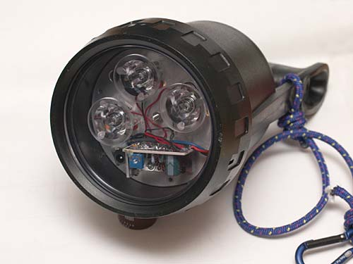
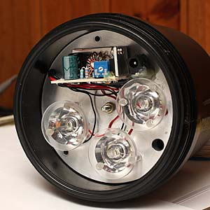
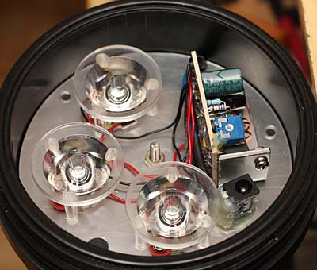
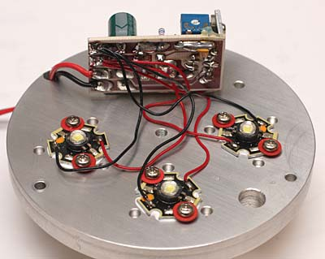

LED & illuminazione
Kit torcia (sub) 3 led 3.7W tot. 720 Lumen
Modifica su Technisub Nuova VEGA "Fai da te" di R.Chirio
Indice della pagina

Gennaio, 2008
Le torce sub con i led rappresentano una notevole evoluzione rispetto agli illuminatori con lampade alogene, la resa luminosa aumenta di oltre 4-5 volte rispetto la tradizionale lampada al quarzo.
Lo spettro luminoso dei led verso il bianco azzurro, facilita la penetrazione della luce nell'acqua.
E' abbastanza facile modificare una torcia sub della TECHNISUB modello Nuova Vega, eliminando il riflettore con la lampada alogena e montando al posto un gruppo ottico composto da 3 Led Seoul ZP4, regolatore di corrente e piastra dissipatore.
Guarda il video realizzato dal sub Ivan:
http://www.youtube.com/watch?v=pQzjS8gDg1k
Gruppo ottico.
- Il gruppo composto dai led con lenti da 10°, l'alimentatore switching, il connettore per la ricarica. Il tutto montato su una piastra di alluminio da 125mm di diametro spessore 10mm.

- Il gruppo viene fissato tramite un tirante da 4 MA con un foro centrale sulla piastra di alluminio.
- Per la chiusura viene usato il manopolone, della messa a fuoco della lampada alogena. Si elimina il gruppo porta lampada e rimane una boccola filettata da 4MA dove avviteremo il tirante.

- Il gruppo composto dai 3 led, sono fissati con viti da 3MA, dentro fori passanti filettati direttamente nella piastra di alluminio. E necessario mettere un po’ di grasso conduttivo tra la base dei Led e la piastra dissipatore.

Schema elettrico per batterie da 7,2 a 12V
{kind=link}
Viene mantenuto l'interruttore magnetico originale in quanto la corrente assorbita a regime è meno di 2A, più bassa di quella della vecchia lampada alogena.
E' bene mettere un fusibile da 6,3AT in serie agli accumulatori, per proteggere da cortocircuiti.
La presa Carica batteria ci permette di caricare gli accumulatori senza toglierli dal contenitore.
I tre LED in uscita sono collegati in parallelo, per bilanciare meglio le correnti è necessario avere i cavi di piccola sezione tutti della stressa lunghezza.
Schema elettrico per batterie da 4,8 a 6V
{kind=link}
Viene mantenuto l'interruttore magnetico originale in quanto la corrente assorbita a regime è meno di 3A, più bassa di quella della vecchia lampada alogena.
E' bene mettere un fusibile da 6,3AT in serie agli accumulatori, per proteggere da cortocircuiti.
La presa Carica batteria ci permette di caricare gli accumulatori senza toglierli dal contenitore.
I tre LED in uscita sono collegati in parallelo, per bilanciare meglio le correnti è necessario avere i cavi di piccola sezione tutti della stressa lunghezza, è necessario mettere in serie ad ogni led una resistenza da 1,2 Ohm 3W per batterie da 4,8V. Oppure con 6V è necessario mettere una resistenza da 2,5 Ohm 3W.
Realizzazione
- La presa Carica batteria è fissata con della colla acrilica direttamente sull'alluminio.
- Il regolatore switching viene fissato alla piastra dissipatore con una o due viti da 3MA.
- Il passaggio cavi deve essere protetto con un pezzo di tubetto termorestringente, per evitare lacerazioni dei cavi stessi.
- Le lenti vanno fissate con una goccia di colla per ogni piedino.
{kind=link}
- Si vede dentro la torcia il tirante da 4MA comandato dalla manopola rossa.
- Il pacco accumulatori da 8000mA/h
- Prima di richiudere il tutto verificare che gli accumulatori siano ben posizionati e le lamelle di contatto non premano sul corpo degli accumulatori stessi.
- Chiudere facendo attenzione di non pizzicare i cavi di collegamento, con la potenza degli accumulatori è facile fare dei disastrosi corto circuito con la bruciatura dei cavi.
{kind=link}
- Torcia in fase di ricarica
- Con il pacco batteria da 8000mA/h, e carica batteria da 600mA otteniamo una completa ricarica in 10-14 ore.
- Prima di richiudere il vetro frontale ricordarsi di mettere il grasso al silicone sulla guarnizione.
- L'autonomia è risultata superiore alle 4 ore continuative con i led alimentati a 850mA cadauno.
{kind=link}
Torcia 9 LED Seoul
- Modifica su torcia con originali 9 Led Luxeon
- Buona prestazione luminosa sostituendo i Luxeon con 9 Seoul ZP4.
- Ottima dissipazione direttamente in acqua, ottenuta attraverso il corpo torcia in alluminio.
- Modesta autonomia dovuta alle batteria da solo 6V 5A/h, non è stato possibile montare il regolatore switching che avrebbe migliorato il rendimento di conversione.
{kind=link}
2007© Roberto Chirio: all rights reserved.